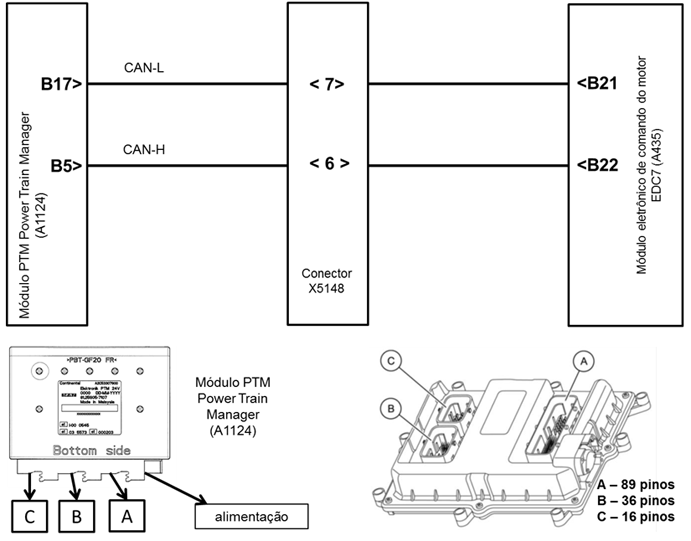

|

Descrição da Falha
Identificação dos
parâmetros do imobilizador na PTM (Power Train Manager)
e no módulo de comando EDC7 não coincidem.
Indicação de Falha
Luz de alerta acende constantemente com os símbolos  e e  e ativa o alarme sonoro longo, com o veículo parado. e ativa o alarme sonoro longo, com o veículo parado.
A LIM permanece desligada.
Estratégia de Monitoramento
O módulo EDC7 monitora a compatibilidade de chave do imobilizador entre EDC7 e a PTM (Power Train Manager).
Efeito da Falha
Motor de arranque atua, porém motor
não dará a partida, pois haverá o bloqueio dos bicos injetores.
Possíveis Falhas
FMI 9: Identificação do imobilizador na
PTM (Power Train Manager) e no módulo EDC7 não coincidem.
Aviso
  Ao
se "flechar" o módulo EDC7 haverá uma breve interrupção de comunicação
entre os módulos, o que também poderá acarretar a falha. Ao
se "flechar" o módulo EDC7 haverá uma breve interrupção de comunicação
entre os módulos, o que também poderá acarretar a falha.
A falha pode ser registrada se o módulo EDC7 ou a PTM (Power Train Manager) não estiverem ligados.
Registros de Falhas em Outros
Módulos de Comando
Sim, PTM (Power Train Manager).
Considerar os esquemas
elétricos do veículo
| Verificação
|
Medição |
Eliminação da
Falha |
|
Falhas remanescentes
|
-
|
– Desligar a ignição
- Aguardar a rotina de desligamento do módulo EDC7 (cerca de 15 segundos)
- Ligar a ignição novamente
- Apaguar a memória de falhas
|
| Módulo eletrônico EDC7 |
Utilize o Tester Box e consulte o manual Verificação EDC7 C32:
- Medir a resistência entre os pinos B21
(CAN-L) e B22 (CAN-H)
Valor nominal:
~120 Ω
|
– Verificar a
tensão de alimentação
– Verificar os cabos
quanto a rompimento ou oxidação
– Verificar as
conexões quanto a mau contato ou pino torto
– Em cerca de 0 Ω,
curto-circuito de CAN-H para CAN-L
– Caso nenhuma falha
seja verificada, substituir a PTM (Power Train Maneger)
|
Tester box

|